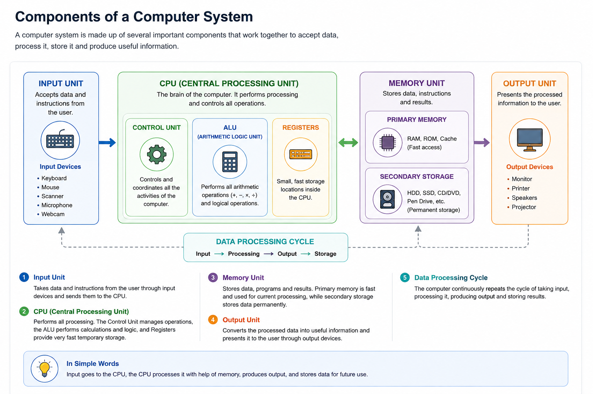
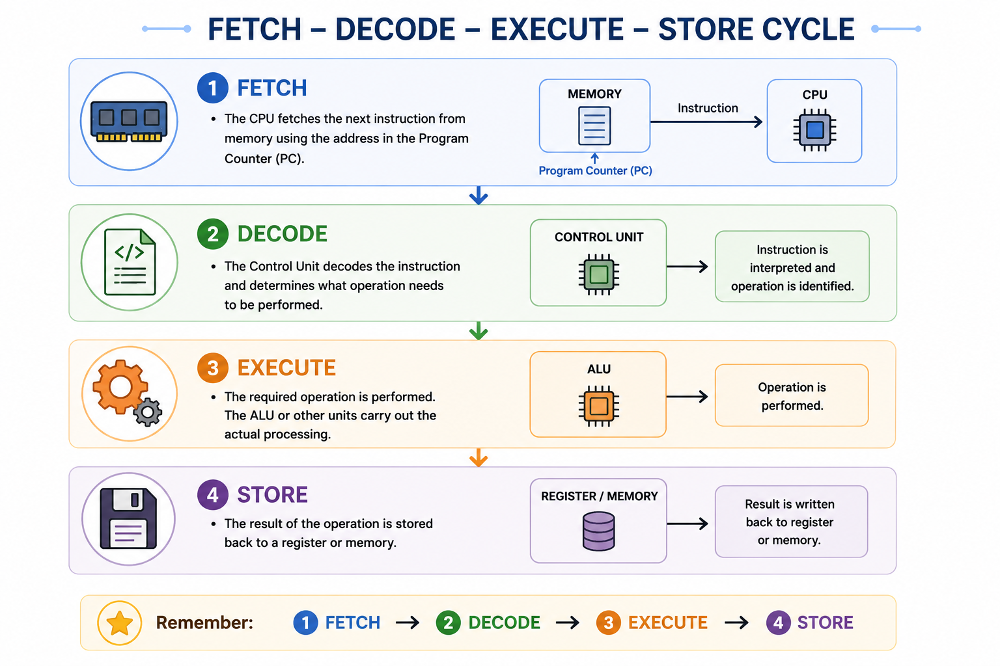
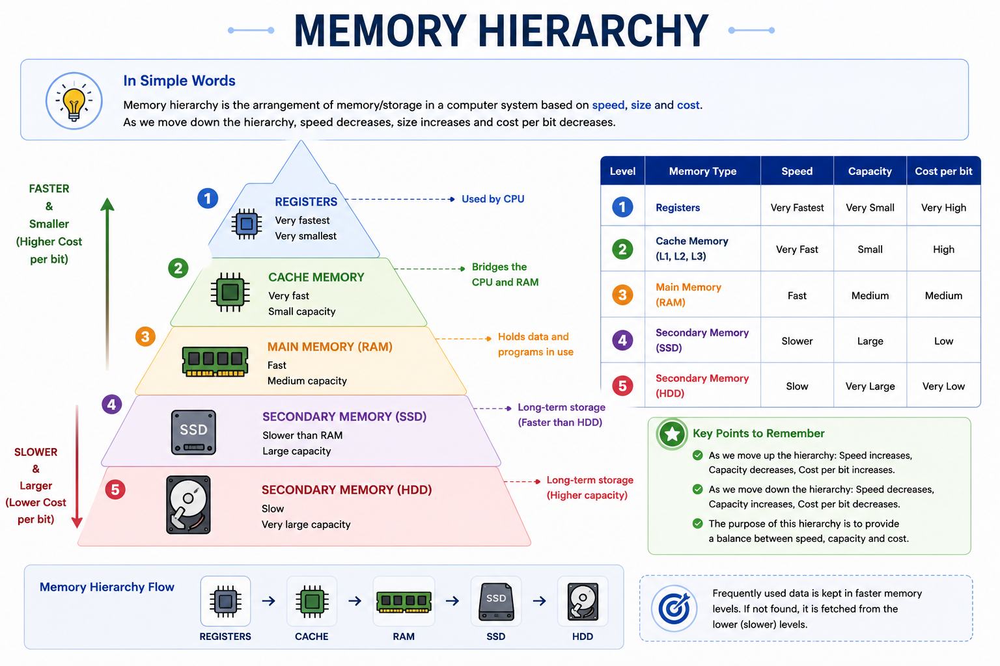

Computer Architecture refers to the design, structure, and organization of a computer system and the way its major components work together to execute programs.
Computer Architecture is like the blueprint of a computer. It explains how the CPU, memory, input/output devices, and other components are organized and how they work together.

Computer Architecture describes the design and functional behavior of a computer system. It explains how the processor, memory, input/output devices, instructions, and data are organized and how they interact while a program is executed.
It provides the programmer's view of a computer system and includes concepts such as instruction sets, data formats, registers, addressing methods, memory organization, and input/output mechanisms.
Architecture tells us what the system does, while organization explains how the hardware implements it.
| Computer Architecture | Computer Organization |
|---|---|
| Describes the functional behavior and programmer-visible design of a computer. | Describes how the hardware components are connected and implemented. |
| Concerned with what the system does. | Concerned with how the system does it. |
| Includes instruction set, data formats, registers and addressing modes. | Includes hardware connections, buses, control signals and implementation. |
Instruction Set Architecture, commonly called ISA, defines the instructions and programmer-visible features that a processor supports.
It describes the instruction set, registers, data formats, addressing methods, and other features that software uses when communicating with the processor.
Examples of architectures include x86, ARM, MIPS, and RISC-V.
Von Neumann Architecture is based on the stored-program concept. In this architecture, program instructions and data are stored in the same memory.
The CPU fetches instructions from memory one by one, decodes them, and executes them.
In Von Neumann Architecture, both instructions and data use the same memory. The CPU takes an instruction from memory, understands it, executes it, and then moves to the next instruction.
A computer system can be understood through five important functional units:
| Functional Unit | Main Function |
|---|---|
| Input Unit | Accepts data and instructions from the user. |
| Memory Unit | Stores data, instructions and results. |
| ALU | Performs arithmetic and logical operations. |
| Control Unit | Controls and coordinates computer operations. |
| Output Unit | Presents processed information to the user. |
CPU organization describes the internal structure of the processor and how its different parts work together during instruction processing.
The major parts of CPU organization include:
Inside the CPU, the ALU performs calculations, the Control Unit controls the operations, and registers temporarily hold important data and instructions.
The Arithmetic Logic Unit is the part of the CPU responsible for performing arithmetic and logical operations.
| Operation Type | Examples |
|---|---|
| Arithmetic | +, −, ×, ÷, Increment, Decrement |
| Logical | AND, OR, NOT, XOR |
| Comparison | Equal, Greater than, Less than |
The Control Unit manages and coordinates the activities of the computer system. It directs the flow of data and instructions between the CPU, memory and input/output devices.
The Control Unit controls and coordinates the operations of the computer. It does not perform the actual arithmetic calculations.
Registers are small, high-speed storage locations inside the CPU. They temporarily hold data, instructions, addresses, and intermediate results during instruction execution.
| Register | Function |
|---|---|
| PC — Program Counter | Stores the address of the next instruction. |
| IR — Instruction Register | Stores the current instruction. |
| ACC — Accumulator | Stores results produced by ALU operations. |
| MAR — Memory Address Register | Stores the memory address being accessed. |
| MDR — Memory Data Register | Stores data being transferred to or from memory. |
| Flag / PSW | Stores status information such as zero, carry and sign. |
Memory organization explains how memory is structured and accessed according to speed, capacity and cost.
Faster memory is generally smaller and placed closer to the CPU, while slower storage provides larger capacity.
Cache memory is a small and fast memory located between the CPU and main memory. It stores frequently used data and instructions so that the CPU can access them more quickly.
| Level | General Characteristic |
|---|---|
| L1 Cache | Smallest and fastest cache, very close to the CPU core. |
| L2 Cache | Larger than L1 and generally slower than L1. |
| L3 Cache | Larger cache that may be shared among CPU cores. |
Cache is like a small fast storage area kept close to the CPU so frequently needed information can be accessed quickly.
Input/Output organization deals with communication between the CPU and peripheral devices such as keyboards, displays, printers, storage devices and other external devices.
In programmed I/O, the CPU checks the device and waits for it to become ready. This can keep the CPU busy while waiting.
In interrupt-driven I/O, the device sends an interrupt signal to the CPU when it requires attention or is ready for transfer.
DMA allows data to be transferred directly between an I/O device and memory with reduced involvement of the CPU.
A system bus provides the communication path between the CPU, memory and input/output devices.
| Bus | Direction | Function |
|---|---|---|
| Data Bus | Bidirectional | Carries actual data between components. |
| Address Bus | Unidirectional | Carries memory or I/O addresses. |
| Control Bus | Bidirectional | Carries control and timing signals. |
You can think of buses as communication roads inside the computer. They carry data, addresses and control signals between different components.
The CPU processes an instruction through a basic cycle called the Fetch–Decode–Execute cycle.

The CPU obtains the required instruction from memory. The Program Counter helps identify the address of the next instruction.
The Control Unit interprets the instruction and determines what operation needs to be performed.
The required operation is performed. For arithmetic and logical operations, the ALU performs the required calculation.
The result is written back to a register or memory as required.
Instruction processing involves fetching an instruction, decoding the operation and operands, obtaining required data, executing the operation and storing the result.
The opcode identifies the operation to be performed, while the operand identifies the data or location involved.
Memory hierarchy arranges storage according to speed, size and cost. Faster memory is generally smaller and more expensive, while larger storage is slower and cheaper per unit of capacity.

| Memory Level | General Characteristic |
|---|---|
| Registers | Very small and extremely fast storage inside the CPU. |
| Cache | Very fast memory that reduces CPU access time. |
| RAM | Main working memory for active programs and data. |
| SSD | Fast, non-volatile secondary storage. |
| HDD | Large-capacity magnetic secondary storage. |
| Concept | Remember This |
|---|---|
| Computer Architecture | Design and functional behavior of a computer system. |
| Von Neumann | Program instructions and data share the same memory. |
| ALU | Performs arithmetic and logical operations. |
| Control Unit | Controls and coordinates operations. |
| Registers | Very fast temporary storage inside CPU. |
| System Bus | Data Bus + Address Bus + Control Bus. |
| Instruction Cycle | Fetch → Decode → Execute → Store. |
| Memory Hierarchy | Registers → Cache → RAM → SSD/HDD. |
After reading the topic, watch this easy Hindi explanation of a major Computer Architecture concept.
▶ Watch: Von Neumann Architecture in Computer Architecture — Hindi
A short handwritten-style revision sheet covering Computer Architecture, Von Neumann Architecture, CPU, buses and memory hierarchy will be provided here.
Use the mind map for quick revision of Computer Architecture, CPU, memory, buses and instruction processing.